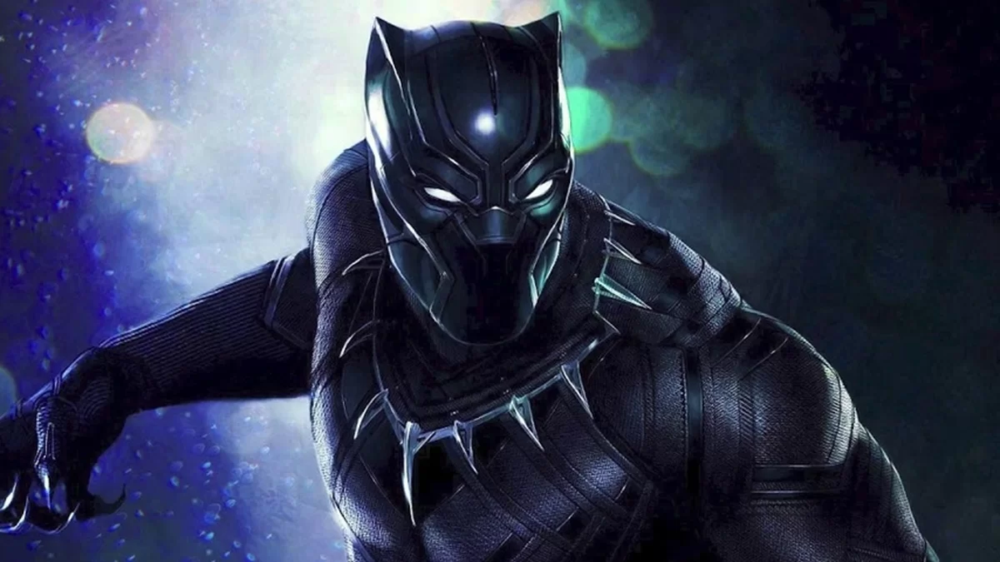
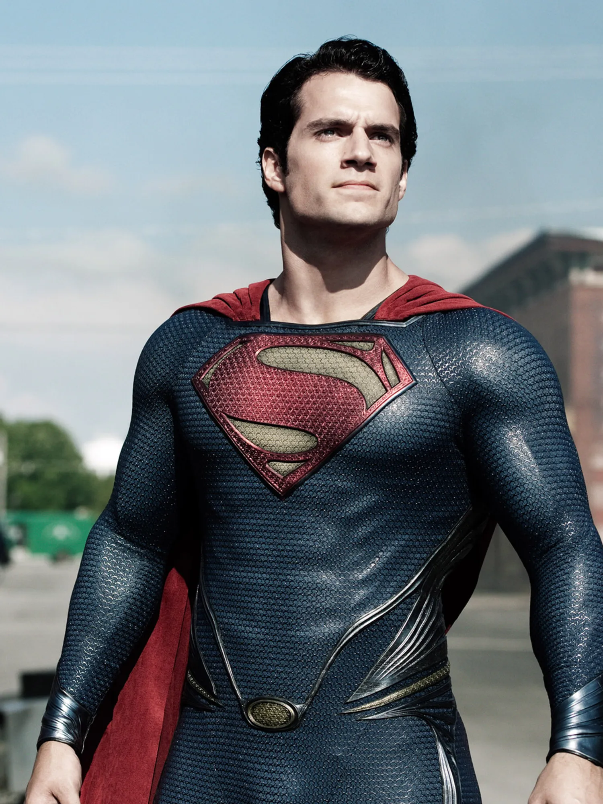

O personagem Neo vive no mundo da
Matrix, um ambiente ilusório em que os seres humanos são neuralmente ligados a um gigantesco sistema
computacional que simula o mundo no período do século XX este sistema foi desenvolvido por uma
inteligêcia artificial
O personagem Neo vive no mundo da
Matrix, um ambiente ilusório em que os seres humanos são neuralmente ligados a um gigantesco sistema
computacional que simula o mundo no período do século XX este sistema foi desenvolvido por uma
inteligêcia artificial
 o príncipe herdeiro de Asgard, banido à
Terra e despojado de seus poderes depois que ele reinicia uma guerra antiga. Como seu irmão, Loki,
planeja tomar o trono para ele mesmo, Thor deve provar ser digno e recuperar seu martelo, o
Mjöllnir.
o príncipe herdeiro de Asgard, banido à
Terra e despojado de seus poderes depois que ele reinicia uma guerra antiga. Como seu irmão, Loki,
planeja tomar o trono para ele mesmo, Thor deve provar ser digno e recuperar seu martelo, o
Mjöllnir.
 Kevin Flynn,é um gênio da informática
que, um dia, desapareceu sem deixar vestígios. Seu filho Sam Flynn, na época com sete anos, é criado
pelos avós e a empresa de Flynn, a Encom, é gerenciada pelos demais acionistas. Sam é levado a outro
mundo tecnologico
Kevin Flynn,é um gênio da informática
que, um dia, desapareceu sem deixar vestígios. Seu filho Sam Flynn, na época com sete anos, é criado
pelos avós e a empresa de Flynn, a Encom, é gerenciada pelos demais acionistas. Sam é levado a outro
mundo tecnologico

O mutante nasceu no Canadá, na
segunda metade do século 19. O rapaz era filho ilegítimo de Thomas Logan, o qual acabou sendo morto
de forma acidental pelo filho. Em seguida, ele fugiu, adotou o nome Logan e viveu parte da sua vida
no meio das florestas.

Optimus Prime é o último
descendente da Dinastia dos Primes e sucessor de Sentinel Prime. Em Cybertron, ele era apenas um
operário da equipe de Sentinel Prime até descobrir suas origens e se tornar o líder dos Autobots. Na
Terra, se transforma em um Peterbilt 379 com pintura de chamas.
Harry Potter é um garoto órfão que
vive infeliz com seus tios, os Dursleys. Ele recebe uma carta contendo um convite para ingressar em
Hogwarts,, o guarda-caça de Hogwarts, que chega para levá-lo até a escola, vivendo diversas
aventuras com seus novos amigos, Rony Weasley e Hermione Granger.

Um ex-fuzileiro da terra futurista e
devastada, colocado numa cadeira de rodas para todo o sempre após uma ferida na espinha enquanto
esteve na Venezuela, ele foi recrutado por dois homens para prosseguir o trabalho do seu irmão gêmeo
após a sua morte, para operar um avatar

T'Challa foi o próximo na linha
para ser o rei de Wakanda e o Pantera Negra, mas até que ele estava pronto para se tornar o líder da
nação, seu tio S'yan (o irmão mais novo de T'Chaka) passou com sucesso as provas para se tornar o
novo Pantera Negra
César e seu gruposão forçados a
entrar em uma guerra contra um exército de soldados liderados pelo impiedoso Coronel (Woody
Harrelson) . Depois que vários macacos perdem suas vidas no conflito, César luta contra seus
instintos e parte em busca de vingança. Dessa jornada, o futuro do planeta poderá estar em jogo.

Baseado no livro homônimo de
Ernest Cline, o filme é ambientado no ano 2045. Com o mundo à beira do caos e do colapso, as pessoas
encontraram refúgio no OASIS, um amplo universo de realidade virtual criado pelo genial e excêntrico
James Halliday
Policial é morto em combate e
transformado por cientistas da empresa que dirige a força policial em um ciborgue ultrassofisticado
a fim de ser usado na luta contra o crime na cidade de Detroit. Porém, apesar de ter sua memória
apagada, lembranças o assombram e o levam a buscar vingança.

Pouco antes da destruição do planeta
Krypton, o cientista Jor-El envia seu pequeno filho Kal-El em uma nave espacial à Terra. Criado
pelos agricultores Jonathan e Martha Kent, o jovem Clark descobre a fonte de seus poderes
sobre-humanos e se muda para Metrópolis para combater o mal.